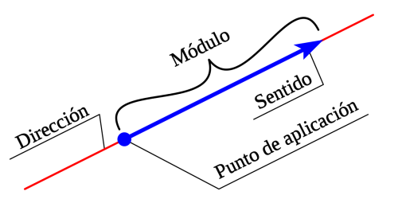

Isaac Newton
En física, se llama vector a un segmento de recta en el espacio que parte de un punto hacia otro, es decir, que tiene dirección y sentido. Los vectores en física tienen por función expresar las llamadas magnitudes vectoriales.
El término vector proviene del latín vector, vectoris, cuyo significado es ‘el que conduce’, o ‘el que transporta’.
Los vectores se representan gráficamente con una flecha. Asimismo, cuando deben ser expresados en una fórmula, se representan con una letra coronada por una flecha.
Las magnitudes vectoriales son aquellas magnitudes que, además de representarse con un número y una unidad, requieren también ser expresadas en el espacio con una dirección y un sentido, es decir, con un vector. Esto las distingue de las magnitudes escalares, las cuales solo requieren un número y una unidad. Son ejemplos de magnitudes vectoriales los siguientes:
Los componentes de los vectores que definen sus características son los siguientes:
componentes de un vector:
Módulo o magnitud: se refiere a la longitud o amplitud del vector o segmento de recta.
Dirección: se refiere a la inclinación que posee el vector con respecto a un eje horizontal imaginario, con el cual forma un ángulo.
Sentido: se refiere a la orientación del vector, indicado por la cabeza de la flecha del vector.
Isaac Newton

Albert Einsten

Nicola Tesla